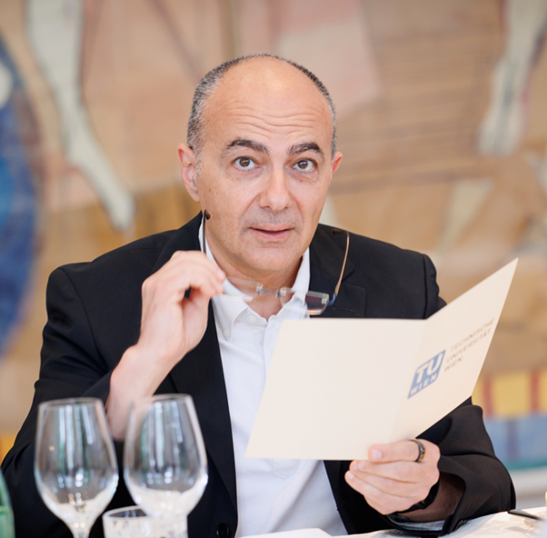

|
Congress Keynotes |
|
Title of talk: Research Opportunities for Edge lntelligence in distributed computing continuum ecosystemsl
Schahram Dustdar TU Wien, Austria Abstract:
A captivating set of hypotheses from the field of neuroscience suggests that human and animal brain mechanisms result from few powerful principles. If proved to be accurate, these assumptions could open a deep understanding of the way humans and animals manage to cope with the unpredictability of events and imagination. Modern distributed systems also deal with uncertain scenarios, where environments, infrastructures, and applications are widely diverse. In the scope of IoT-Edge-Fog-Cloud computing, leveraging these neuroscience-inspired principles and mechanisms could aid in building more flexible solutions able to generalize over different environments. Bio: Schahram Dustdar is a Full Professor of Computer Science at the TU Wien, heading the Research Division of Distributed Systems, Austria. He holds several honorary positions: University of California (USC) Los Angeles; Monash University in Melbourne, Shanghai University, Macquarie University in Sydney, University Pompeu Fabra, Barcelona, Spain. From Dec 2016 until Jan 2017 he was a Visiting Professor at the University of Sevilla, Spain and from January until June 2017 he was a Visiting Professor at UC Berkeley, USA. Title of talk: Native Intelligence of Future Mobile Communication Networks
Kun Yang University of Essex, UK Abstract:
With 5G mobile communication systems being commercialized and deployed worldwide, research into next-generation communication systems (i.e., 6G) has started since 2020. Native intelligence is essential for 6G to deliver its promises of being faster, greener and smarter. This talk starts with a brief introduction of 6G mobile communication systems, and then looks into how computation, and in particular artificial intelligence (AI) and machine learning (ML), comes into play in 6G from different perspectives. The talk firstly looks into how ML is utilized for data-driven end-to-end communication system design that revolutionizes the traditional modular design. Then this talk introduces some interesting new trends in mobile communication networks such as semantic communications, digital twin networks, and ISAC (Integrated Sensing and Communication), all from the perspective of how computation plays a role in supporting native intelligence of modern communication systems. Bio: Kun Yang received his PhD from the Department of Electronic & Electrical Engineering of University College London (UCL), UK. He is currently a Chair Professor in the School of Computer Science & Electronic Engineering, University of Essex, UK, leading the Network Convergence Laboratory (NCL). He is also an affiliated professor of UESTC. His main research interests include wireless networks and communications, future Internet and edge computing. In particular he is interested in energy aspects of future communication systems such as 6G, promoting energy self-sustainability via both energy efficiency (green communications and networking) and energy harvesting (wireless charging). He has managed research projects funded by UK EPSRC, EU FP7/H2020, and industries. He has published 400+ papers and filed 20 patents. He serves on the editorial boards of a number of IEEE journals (e.g., IEEE ComMag, TNSE, WCL). He is a Deputy Editor-in-Chief of IET Smart Cities Journal. He has been a Judge of GSMA GLOMO Award at World Mobile Congress – Barcelona since 2019. He was a Distinguished Lecturer of IEEE ComSoc (2020-2021). He is a Member of Academia Europaea (MAE), a Fellow of IEEE, a Fellow of IET and a Distinguished Member of ACM. Title of talk: Blockchain-Empowered Semantic and Lifecycle Management for AI-Generated Content (AIGC) in Edge Networks
Dusit Tao Niyato Nanyang Technological University, Singapore Abstract:
The rapid development of Artificial Intelligence Generated Content (AIGC) has brought daunting challenges regarding service latency, security, and trustworthiness. Recently, researchers presented the edge AIGC paradigm, which effectively optimizes service latency by distributing AIGC services to edge devices. However, AIGC products are still unprotected and vulnerable to tampering and plagiarism. Moreover, as a kind of online non-fungible digital property, the free circulation of AIGC products is hindered by the lack of trustworthiness in open networks. In this talk, we first present an overview of AIGC and its lifecycle, including content creation, verification, distribution, and storage. Then, we highlight the security challenges in AIGC, and for the first time, we present a blockchain-empowered framework to manage the lifecycle of edge AIGC products. Specifically, leveraging fraud proof, we propose a protocol to protect the ownership and copyright of AIGC, called Proof-of-AIGC. We then design an incentive mechanism to guarantee the legitimate and timely execution of funds-AIGC ownership exchanges among anonymous users. Furthermore, we present the design of a blockchain-aided semantic communication framework for AIGC services to facilitate interactions between the physical and virtual domains among service providers and edge devices. We also design a semantic defense scheme that uses the blockchain and zero-knowledge proofs to check the authenticity of semantic data transformations. Finally, we discuss major research directions of blockchain in AIGC services. Bio: Dusit Niyato is currently a President's Chair Professor in Computer Science and Engineering in the School of Computer Science and Engineering, Nanyang Technological University, Singapore. He received B.E. from King Mongkuk's Institute of Technology Ladkrabang (KMITL), Thailand in 1999 and Ph.D. in Electrical and Computer Engineering from the University of Manitoba, Canada in 2008. Dusit's research interests are in the areas of distributed collaborative machine learning, Internet of Things (IoT), edge intelligent metaverse, mobile and distributed computing, and wireless networks. Dusit won the 2011 IEEE Communications Society Fred W. Ellersick Prize Paper Award and the IEEE Computer Society Middle Career Researcher Award for Excellence in Scalable Computing in 2021 and Distinguished Technical Achievement Recognition Award of IEEE ComSoc Technical Committee on Green Communications and Computing 2022. Dusit is serving as Editor-in-Chief of IEEE Communications Surveys and Tutorials, an area editor of IEEE Transactions on Vehicular Technology, editor of IEEE Transactions on Wireless Communications, associate editor of IEEE Internet of Things Journal, IEEE Transactions on Mobile Computing, IEEE Wireless Communications, IEEE Network, and ACM Computing Surveys. He was a guest editor of IEEE Journal on Selected Areas on Communications. He was a Distinguished Lecturer of the IEEE Communications Society for 2016-2017. He was named the 2017-2022 highly cited researcher in computer science. He is a Fellow of IEEE and a Fellow of IET. |
Organizations:
 |
|---|
Copyright@ Cybermatics 2023. Created and Maintained by Cybermatics 2023 Web Team.